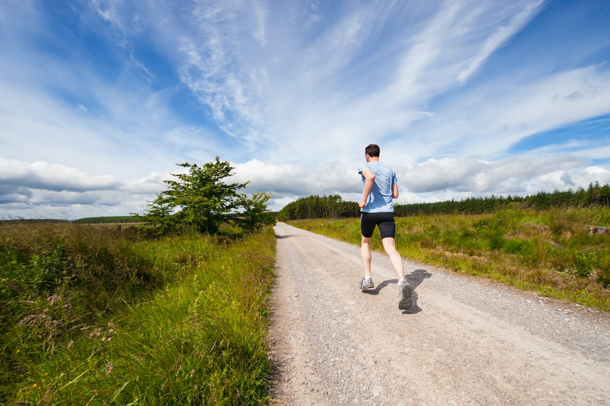

谨以此篇，献给懒惰的我。
中年人的世界里没什么是容易的，除了长胖和郁闷。
很多人都参与了一场赌局，你赌健身房不跑路，健身房赌你不跑步。我以前也办过年卡，去了四、五次，过了新鲜期就不去了。理由有很多，懒字头一个。不过我确实不喜欢健身房给人一种空气不流通的心理暗示。
从去年开始，我渐渐地对户外跑步产生了兴趣。其实是双赢的，户外跑步收获了一个新的小粉丝，我通过户外跑成功甩掉了近 30 斤肥油。
今年还在坚持跑，只是又明显开始犯懒了，所以写点儿文字，鞭策一下自己，希望自己还是要脸的。
相比健身房，户外跑的最大好处是放飞心灵的感觉。可以根据实际情况，不停地变换跑步场景，一会儿奔跑在园区里、一会儿奔跑在山野间、一会儿奔跑在小河边……也不是都没有可能。
其实我就比较喜欢在近郊跑步，只听见虫鸣鸟叫和树叶沙沙的声音，这种场景，即使不跑步，对身心也是一种极好的调养。如果是清晨去，那就更完美了！山林河流边的鸟语花香能够很好地排遣运动时的枯燥，当然也可以听听音乐，不过一定要听点儿什么的话，我更愿意选择平时没时间听的音频栏目。
对于久居职场的中年人来说，不论是劳心者还是劳力之人，周身上下的零件多多少少都会有一些状况。然而由于工作的节奏、生活的压力、家庭的因素……真的很少有人能严格按照“健康的方式”去生活，因为我们已经把自己每天绝大部分的有效时间和精力都卖了，要不然连双像样的跑鞋都买不起。
由此看来，跑步的确是一项成本低、见效快的一项健康投资。而且我相信，在过去至少 300 万年的进化历程里，奔跑始终都是人类生活的一项重要组成部分，直到近几十年来汽车开始普及。30 年的突飞猛进，终究还是要顺应着点儿 300 万年的水滴石穿，对吧？
我还是个初级入门跑者，所以我不是要给谁什么意见或者建议。我想说的无非就是：跑步也许不会让你财务自由，但是不跑的话，被人问到“你瞅啥”的时候，咋整哩？